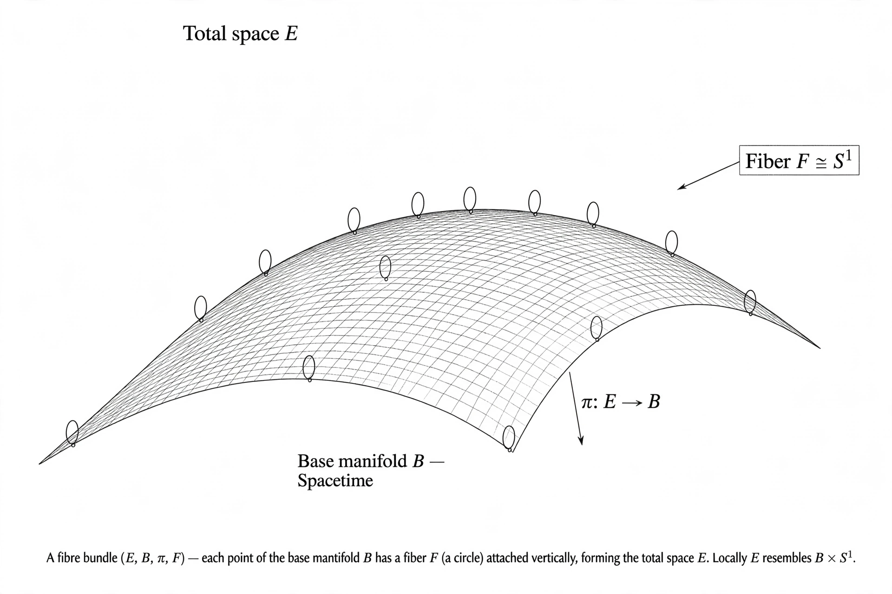

Gauge theory

[Image: Illustration of a fibre bundle over spacetime: a circle of possible phases attached at each point]In physics, a gauge theory is a type of field theory in which the Lagrangian is invariant under local (position-dependent) transformations from a certain Lie group — the gauge group. The transformations can adjust the theory's variables independently at each point of spacetime without changing its physics; the requirement of this invariance then dictates the existence and form of interaction fields (gauge bosons) that compensate for the local freedom.
Gauge symmetry is the organising principle of the Standard Model: Quantum electrodynamics is a U(1) gauge theory; the Electroweak interaction is SU(2) × U(1); Quantum chromodynamics is SU(3). Its roots are in Weyl's 1918 (failed) scale-invariance attempt and his 1929 insight that electromagnetism is the gauge theory of quantum phase; Yang and Mills (1954) generalised the idea to non-Abelian groups, though the theory seemed useless (predicting massless bosons) until the Higgs mechanism and renormalisability proofs of the 1960s–70s made it inevitable. Geometrically, a gauge field is a connection on a fibre bundle, and the Aharonov–Bohm effect is its holonomy made visible.
Why gauge invariance
Gauge invariance is not a symmetry of nature so much as a redundancy of description — like a choice of coordinates — whose consistent imposition generates dynamics: demand local phase invariance of the electron field and Maxwell's equations, the photon, and the exact form of the electromagnetic coupling follow. The miracle extended: the strong and weak forces, and (in a different realisation) gravity itself as the gauge theory of spacetime symmetries.